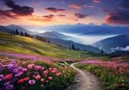
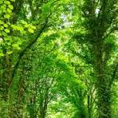
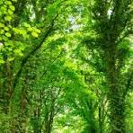

this is a gallery page
Nature, with its boundless beauty and captivating serenity, is a masterpiece of creation that never fails to inspire awe. From the majestic mountains that pierce the sky to the tranquil flow of rivers meandering through lush green valleys, every aspect of nature holds its own unique charm. In the heart of a dense forest, sunlight filters through the canopy, painting the forest floor with dappled light. The air is alive with the symphony of chirping birds and rustling leaves, while a gentle breeze carries the sweet scent of wildflowers. At the edge of a pristine lake, the water shimmers like liquid glass, reflecting the azure sky above. Tall grasses sway gently in the breeze, and a family of ducks glides across the surface, leaving a trail of ripples in their wake. In the rugged expanse of a desert landscape, sand dunes rise and fall like waves frozen in time. The air is dry and scorching, yet teeming with life adapted to thrive in the harshest of conditions. As the sun sets, painting the sky with hues of orange and pink, the desert comes alive with the haunting call of nocturnal creatures. Nature's beauty is not only found in its grandeur but also in its smallest details. A delicate flower unfurling its petals, a butterfly dancing on the breeze, a babbling brook cascading over smooth stones – each moment in nature is a testament to the wonder of life. In a world filled with chaos and noise, nature offers a sanctuary for the soul – a place to find solace, inspiration, and a deep sense of connection to something greater than ourselves. As we marvel at the magnificence of the natural world, we are reminded of our own place within it and the importance of preserving its splendor for generations to come.
 
